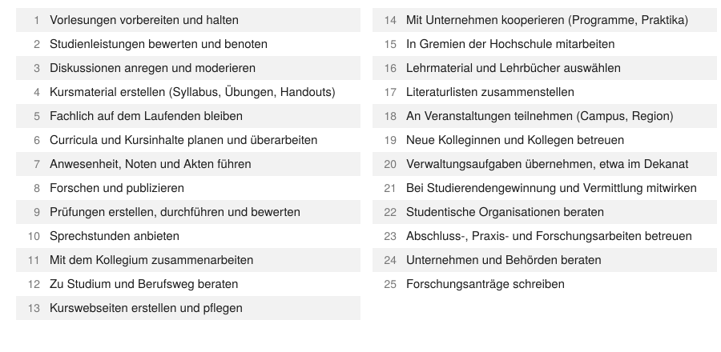

3 Prinzipien der Automation von Aufgaben
3.1 Was sind unsere Aufgaben?
Bevor wir die Aufgaben der Lehre einzeln ansehen, ein Blick darauf, welchen Berufen Gespräche mit einer KI überhaupt zugeordnet werden. Der Anthropic Economic Index ordnet Gespräche mit dem Assistenten Claude automatisch Berufen und Arbeitsaufgaben der US-Berufsdatenbank O*NET zu und veröffentlicht, welcher Anteil der Gespräche eines Monats auf jeden Beruf entfällt (Massenkoff et al., 2026; National Center for O*NET Development, 2026).1 Die Bibliothek der Prompts macht daraus einen Raum: Jedes Regal ist eine von 22 Berufshauptgruppen, jedes Buch ein Beruf, die Buchbreite sein Anteil. Raten Sie zuerst, wo das Regal der Lehre steht, und machen Sie dann den Rundgang; wer vorher rät, behält die Auflösung besser, auch wenn der Tipp danebenlag (Richland et al., 2009). Das dauert etwa fünf Minuten.
Im Mai 2026 stand das Regal Bildung, Ausbildung und Bibliothek mit 12,79 % der Gespräche auf Platz 3 von 22, bei Gesprächen aus Deutschland mit 12,87 % auf Platz 2. Breit ist es vor allem durch den Bibliotheksberuf (4,22 %), dem O*NET Auskunfts- und Rechercheaufgaben zuordnet; die Hochschullehrenden aller 35 Fächer kommen zusammen auf 2,12 %.
Die Daten zeigen Gesprächsinhalte, nicht die Menschen dahinter. Ein Gespräch über eine Klausur landet im Bildungsregal, auch wenn eine Studentin es geführt hat; und als Momentaufnahme eines Monats mit einem einzigen Assistenten sagt die Bibliothek nichts darüber, welche Berufe KI verändert.
Gebaut hat sie ein Agent (Claude Opus 5.5) in einer Sitzung von rund 40 Minuten, auf einen Satz hin, der auf eine schriftliche Bauanleitung verwies: „Lies [die Regeln], [die Standards] und [den Auftrag] und führe den Auftrag aus.“ Er zog die Werte per Skript aus Economic Index und O*NET und baute den Raum mit Three.js; 1.483 Berufsnamen und Aufgaben übersetzten fünf Teilagenten. Die Schwäche: Sie übersetzten uneinheitlich, „students“ etwa mal als „Studierende“, mal als „Lernende“. Schreibweisen ließen sich per Skript angleichen, Bedeutungen nicht. Eine Prompt-Vorlage steht am Ende des Rundgangs.
Woraus besteht das im Detail und wo könnten große Sprachmodelle (LLMs) helfen? Vor- und Nachbereitung, Evaluation, Beratung, Planung und vieles mehr lassen die Stunden eines Tages schnell vergehen. Abbildung 3.1 zeigt die 25 Hauptaufgaben, die Lehrende nach Umfragen des US-Arbeitsministeriums verrichten (https://www.onetonline.org/link/summary/25-1011.00). Welche Auswirkungen können wir von LLM auf diese konkreten Aufgaben erwarten?

Historische Studien zeigen, dass Technologie typischerweise Tätigkeiten (tasks) beeinflusst und eher selten ganze Jobs ersetzt. Den Rahmen dafür liefert das Aufgabenmodell (task model), das der Nobelpreisträger Daron Acemoglu mit Fredric Kong und Pascual Restrepo im Handbook of Labor Economics zusammengefasst hat (Acemoglu et al., 2025). Für Lehrende, die ihre eigene Arbeit planen, zählen drei Formen technologischen Wandels aus diesem Modell. Bei der Automatisierung (automation) wandert eine Aufgabe vom Menschen zur Technik. Bei der Augmentierung (labor-augmenting technology) bleibt die Aufgabe beim Menschen, der sie mit technischer Unterstützung schneller oder besser erledigt. Und Technik schafft neue Aufgaben (new tasks), die es vorher nicht gab. Die vierte Form des Modells, leistungsfähigere Maschinen in Aufgaben, die sie schon erledigen (capital-augmenting technology), lassen wir hier beiseite. Die Arbeitsmarktforschung beschreibt die Folgen aus Sicht der Beschäftigten und spricht von Verdrängung (displacement effect) und Wiedereinsetzung (reinstatement effect); wer die eigene Lehre plant, fragt dagegen, welche Aufgabe wohin wandert.
| Form | Beschreibung | Aufgaben in der Lehre (Beispiele) |
|---|---|---|
| Automatisierung (automation) | Aufgabe wandert vom Menschen zur KI | • Erstellung, Durchführung und Bewertung von Prüfungen (x) • Verwaltung von Noten und Anwesenheit (x) • Vorbereitung standardisierter Lehrmaterialien (x) • Zusammenstellung von Bibliographien (x) |
| Augmentierung (labor-augmenting technology) | KI unterstützt Menschen; dieselbe Aufgabe braucht weniger Zeit oder gelingt besser | • Vorbereitung und Durchführung von Vorlesungen (x) • Durchführung von Seminaren und Diskussionen (x) • Akademische und berufliche Beratung (?/x) • Forschung und Publikation (x) • Pflege von Webseiten und digitalen Ressourcen (?/x) |
| Neue Aufgaben (new tasks) | KI schafft Aufgaben, die es vorher nicht gab | • Entwicklung KI-gestützter Lehrkonzepte (x) • Qualitätskontrolle von KI-Materialien (x) • Gestaltung individueller Lernpfade (x) • Ethische und rechtliche Begleitung (x) • Weiterbildung des Personals (x) |
In Tabelle 3.1 übertragen wir die drei Formen auf konkrete Aufgaben in der Hochschullehre.
Das folgende Video spielt die drei Formen an den Aufgaben aus Tabelle 3.1 durch. Vier Kacheln wandern von der Lehrperson zur KI, fünf schrumpfen, weil dieselbe Aufgabe weniger Zeit braucht, und fünf neue kommen hinzu. Die Größen der Kacheln sind nicht gemessen; sie zeigen die Richtung der Effekte, nicht ihr Ausmaß.
Video (60 s, ohne Ton): Automatisierung, Augmentierung und neue Aufgaben an den Aufgaben aus Tabelle 3.1. Erstellt mit Claude Code und HyperFrames; die Kachelgrößen sind nicht gemessen.
Die Automatisierung betrifft hauptsächlich administrative und stark standardisierte Tätigkeiten. Aufgaben wie das Erstellen, Durchführen und Bewerten von Prüfungen, die Verwaltung von Noten und Anwesenheiten sowie die Vorbereitung standardisierter Lehrmaterialien oder Literaturzusammenstellungen werden voraussichtlich vollständig oder überwiegend von KI übernommen. Anwendungsstudien und Umfragen der letzten zwei Jahre geben hierzu deutliche Hinweise (Morgan, 2024; Naddaf, 2025; Ogunleye et al., 2024; Ou et al., 2024; Tutton & Cohen, 2025). Wie weit die Automatisierung bei der Bewertung tatsächlich reicht, lässt sich inzwischen präzise sagen. Sehfähige Sprachmodelle bewerten fotografierte handschriftliche Mathematik-Abgaben entlang der Rubriken der Lehrenden insgesamt zuverlässig, aber 87 % der verbleibenden Fehler des besten Modells sind Transkriptionsfehler (Handschrift lesen, äquivalente Umformungen erkennen, Bildqualität), nicht falsch angewandte Bewertungskriterien (Levine et al., 2026). Automatisiert wird also die Rubrik-Anwendung; die menschliche Arbeit verlagert sich auf Erfassungsqualität und stichprobenartige Kontrolle, ein konkretes Beispiel für die neue Aufgabe „Qualitätskontrolle von KI-Materialien“ im Feld „Neue Aufgaben“ derselben Tabelle (zu den Grenzen KI-gestützten Benotens vgl. ?sec-pruefen).
Die Augmentierung betrifft zentrale Lehr-, Forschungs- und Betreuungstätigkeiten, die mit KI-Unterstützung effizienter werden. Dazu zählen die Vorbereitung und Durchführung von Vorlesungen, Seminaren und Diskussionen, akademische und berufliche Beratung der Studierenden sowie Forschung und Publikationen. KI unterstützt hier durch automatische Literaturauswertungen, personalisierte Lerninhalte oder Pflege digitaler Ressourcen, sodass Lehrende ihre Kernaufgaben besser und effektiver erfüllen können (Gottweis et al., 2025; Meincke et al., 2024; Mollick & Mollick, 2023, 2024; Schwarcz et al., 2025).
Gemischte Effekte treten bei einigen Aufgaben wie der Entwicklung und Pflege von Kurswebseiten, dem digitalen Aufzeichnen von Vorträgen und der Auswahl von Lehrmaterialien auf, bei denen KI Teile der Aufgabe übernimmt und die Lehrenden beim Rest unterstützt.
Schließlich schafft generative KI gänzlich neue Aufgaben. Dazu gehören beispielsweise die Entwicklung neuer KI-gestützter Lehrkonzepte und -methoden, Qualitätskontrollen von KI-generierten Lehrmaterialien, Gestaltung individueller Lernpfade, ethische und rechtliche Begleitung des KI-Einsatzes sowie die Weiterbildung des Lehrpersonals im Umgang mit KI-Technologien (Dihan et al., 2025; Mollick et al., 2024; Mollick & Mollick, 2024).
Durch diese differenziertere Analyse der drei Formen wird klar, dass die Einführung von KI in die Lehre zwar mit hoher Sicherheit deutliche Änderungen im Aufgaben-Mix und der Zeitanteile bedeutet, die wir mit verschiedenen Aufgaben verbringen. Das ist nicht neu: Wer bestellt noch regelmäßig per Fernleihe, schickt Briefe oder kopiert in großem Umfang? Wir sehen, dass generative KI wahrscheinlich mittelfristig einen Teil der bisherigen Tätigkeiten automatisieren, Lehrende bei zentralen Kernaufgaben unterstützen und zugleich neue, spezialisierte Aufgaben in der Lehre schaffen wird.
Ob das insgesamt zu einer Zeitersparnis führt, ist keineswegs sicher, denn die neuen Aufgaben um die Einrichtung und Betreuung der KI-Unterstützung können sehr zeitintensiv sein, als Beispiel sei hier etwa die Einrichtung eines Physik-Tutor-Bots (Kestin et al., 2025) oder einer Startup-Simulation, in der KI in verschiedenen Rollen beim Aufsetzen und Verbessern von Geschäftsplänen hilft (Mollick et al., 2024). Beide Konzepte führen sichtlich zu einer Verbesserung der Lehre, aber die gibt es auch hier nicht umsonst.
„Wenn die KI Übungsblätter in einer Stunde statt einem Tag erstellt, haben Lehrende am Ende des Semesters Zeit gewonnen.“
Auflösung: eher nicht. Sicher ist nur, dass sich der Aufgaben-Mix verschiebt: Einiges wandert zur KI, anderes geht schneller, und neue Aufgaben kommen hinzu, etwa die Qualitätskontrolle der Materialien und die Pflege eines Tutors. Ob am Ende Zeit übrig bleibt, hängt davon ab, wie viel diese neuen Aufgaben verschlingen; gemessen ist die Bilanz bisher nicht.
3.2 Wer macht was: Arbeitsweisen von Centaur bis dunkle Fabrik
Wer welchen Schritt einer Aufgabe übernimmt, ist die dritte Delegationsfrage. Das 4D-Modell unterscheidet drei Formen der Zusammenarbeit, die es Modalitäten nennt (Dakan & Feller, 2025): In der Automation führt die KI eine Aufgabe aus, die der Mensch festgelegt hat; in der Augmentation erledigen Mensch und KI sie gemeinsam und im Wechsel; in der Agency richtet der Mensch eine KI ein, die später selbstständig handelt, oft für andere (nicht zu verwechseln mit den Formen des Aufgabenmodells in ?sec-hiwi). Der Hiwi aus ?sec-szenarien arbeitet in der Automation, der Copilot in der Augmentation, Tutor und Simulator in der Agency.
Feiner unterscheidet die Studie zur Jagged Frontier (Dell’Acqua et al., 2023). Der Centaur teilt die Aufgabe: Er überlässt der KI die Teilprobleme innerhalb der Grenze und konzentriert sich selbst auf den Rest. Der Cyborg arbeitet in ständigem Wechsel mit der KI und nutzt ihre Rückmeldungen laufend. Beide setzen voraus, dass der Mensch die Stärken und Schwächen des Modells kennt. Eine spätere Studie des weitgehend selben Teams mit 776 Beschäftigten von Procter & Gamble fand, dass Einzelne mit KI-Unterstützung teils das Leistungsniveau ganzer Teams erreichten; die KI wirkte als „Cybernetic Teammate“ (Dell’Acqua et al., 2025).
Mit stärkeren Agenten kommen Arbeitsweisen hinzu, in denen der Mensch nicht mehr in jeder Schleife sitzt. Als Beschwörer (conjurer) ruft er Agenten bei Bedarf herbei, weist ihnen Arbeit zu und bewertet, was zurückkommt, ohne den Weg dorthin zu begleiten. Mollick hält das für die leistungsfähigste Arbeitsweise, die aber neue Risiken bringt, weil niemand mehr genau sieht, wie die KI zu ihren Ergebnissen kommt (Mollick, 2026b). Am Ende der Reihe steht die dunkle Fabrik (dark factory): Menschen legen fest, was entstehen soll, Maschinen führen aus und prüfen; das trägt nur dort, wo eine Maschine feststellen kann, ob ein Ergebnis stimmt, etwa bei Software mit automatischen Tests (Mollick, 2026a). Dazwischen liegt die Dämmerfabrik (twilight factory): Agenten arbeiten, aber ein vermittelnder Agent holt Menschen hinzu, wenn eine Freigabe nötig ist, Fachwissen fehlt, die Ideen zu gleichförmig werden oder eine Entscheidung interessant ist (Mollick, 2026a). Für die Lehre wiegt eine Folge am schwersten: Wer nur Freigaben und Ausnahmen bearbeitet, übt nie das Urteilen, das eine gute Freigabe voraussetzt, und die Fachleute, die künftig prüfen sollen, wachsen nicht nach (Mollick, 2026a). Das folgende Schema ordnet die fünf Arbeitsweisen den Schritten einer Aufgabe zu.
Im interaktiven Schema lassen sich die Anlässe der Dämmerfabrik einzeln abschalten.
Das folgende Durchspiel zeigt die fünf Arbeitsweisen an einer einzigen Aufgabe, einem Übungsblatt zur optimalen Bestellmenge mit vier Gruppenvarianten. Als Centaur lässt die Professorin nur den Aufgabentext formulieren, als Cyborg entwickelt sie die Aufgabe in zwölf kurzen Wechseln mit der KI. Als Beschwörer schreibt sie einen einzigen Auftrag; ein Orchestrator, ein Programm, das eine Aufgabe zerlegt, verteilt und die Teile wieder zusammenführt, beauftragt Unteragenten (subagents) für die Zahlen, die Texte und die Prüfung (Anthropic, 2025; Schluntz & Zhang, 2024) (griechisch orchēstra, der Tanzplatz vor der Bühne; der Orchestrator ordnet, wer wann auftritt). In der Dämmerfabrik fragt ein Vermittler-Agent die Professorin bei den vier Anlässen; in der dunklen Fabrik bestehen alle Blätter die maschinelle Prüfung und werden doch still leichter, weil der Prüfer misst, ob die Lösungen stimmen, nicht ob die Aufgaben fordern. Die Online-Fassung spielt zwei weitere Fälle durch: Rückmeldungen auf Projektberichte, bei denen die KI-Verordnung menschliche Aufsicht verlangt (Europäisches Parlament und Rat der Europäischen Union, 2024, Anhang III Nr. 3 lit. b) (?sec-ki-vo), und die Aktualisierung einer Vorlesung. Die Denkspuren darin sind angenähert; auch echte Denkspuren geben nicht verlässlich wieder, wie ein Modell zu seinem Ergebnis kommt (Chen et al., 2025).
Im interaktiven Durchspiel lassen sich Fall, Arbeitsweise und Ebene (Dialog, Denkspur, Protokoll) wählen.
Wählen Sie einen Beruf, für den Sie ausbilden, und lassen Sie sich von einem Sprachmodell zehn typische Tätigkeiten dieses Berufs auflisten, etwa nach dem Berufsprofil der US-Datenbank O*NET. Ordnen Sie jede Tätigkeit selbst einer der drei Formen aus Tabelle 3.1 zu: Automatisierung, Augmentierung oder neue Aufgabe. Lassen Sie das Modell dieselbe Zuordnung vornehmen und vergleichen Sie. Wo Sie abweichen, steckt meist eine Annahme über den Beruf, die sich im Gespräch mit Studierenden lohnt.
Die vollständige Übung mit allen vier Phasen: ?sec-ai-fluency-uebung.
3.3 Leitungsaufgabe Mensch–LLM
Die Konsequenz der Delegation ist weniger technisch als organisatorisch. Die Forschung zur Automatisierung hat lange vor den Sprachmodellen beschrieben, dass sich für jede Stufe einer Aufgabe getrennt festlegen lässt, wie viel die Maschine entscheidet und wo der Mensch das Steuer behält (Parasuraman et al., 2000). Für Agenten in der Lehre heißt das: Wir legen vor dem Start fest, an welchen Punkten der Ablauf anhält und auf uns wartet, bei einer Literaturrecherche etwa beim Quellenkorb, beim Rechercheplan und bei der Stichprobe von Aussagen, die wir gegen das Original halten. Je länger die Strecke ohne Blick, desto wichtiger werden diese Punkte.
Jeder Haltepunkt kostet Zeit, und diese Zeit lässt sich nicht vervielfachen: Agenten kann man parallel starten, ihre Ergebnisse landen aber auf demselben Schreibtisch. Wie verschieden weit Organisationen dabei sind, zeigen Nutzungsdaten eines Programmier-Agenten: Bei seinen Organisationskunden arbeiten 67,4 % ohne parallele Agenten, bei OpenAI selbst steuern 28,6 % fünf oder mehr Agenten gleichzeitig (Johnston et al., 2026).
Vor dem Menschen füllt sich die Ablage, sobald die Ergebnisse schneller zurückkommen, als er entscheidet, denn der Durchsatz eines Ablaufs richtet sich nach seiner langsamsten Station; ein weiterer Agent ändert daran nichts. Für die Lehre folgt daraus eine einfache Regel: Wir starten nur so viele Agenten, wie wir in der verfügbaren Zeit ernsthaft prüfen und entscheiden können, und wir beschleunigen Entscheidungen, indem wir ihre Kriterien vorab festlegen, nicht indem wir sie überspringen. Wie man Bestand, Durchsatz und Wartezeit an einer solchen Station rechnet, zeigt das Little’s-Law-Widget in ?sec-widget-littles-law.
Spenden & dieses Open-Access Projekt unterstützen
Literaturverzeichnis
Datensatz
Anthropic/EconomicIndexauf Hugging Face, Release vom 26. Juni 2026, Dateiaei_claude_ai_2026-06-26.csv, Datenmonat Mai 2026, Kennzahlpctder Kategoriesoc_occupation, Lizenz CC BY; Aufgaben je Beruf aus der O*NET 31.0 Database (task_statements.csv), Lizenz CC BY 4.0. Auszug und Übersetzung:scripts/aei-bibliothek.pyim Repositorium des Buchs.↩︎